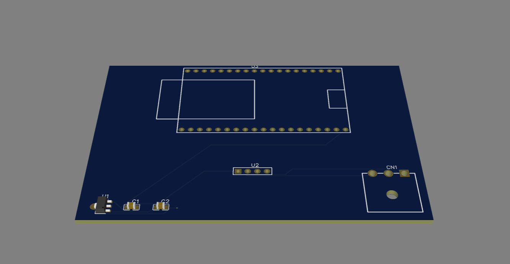
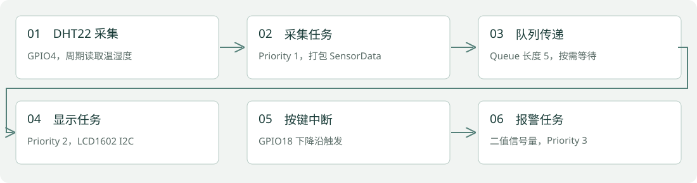
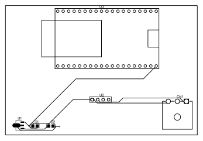

独立工程项目 · 2026.08—2026.09
ESP32 智能环境监测系统
传感器采集、屏幕显示与中断报警，连接 FreeRTOS 软件和 PCB 硬件实践。
ESP32 / FreeRTOS / GPIO / I2C / 嘉立创 EDA

业务问题与项目目标
将周期采集、显示刷新与突发报警拆分，练习 RTOS 任务协作，并保留外设扩展底板的电路与布局资料。
个人负责内容
原简历记载独立开发软件原型及扩展底板设计。当前仓库可核对 Arduino .ino、Wokwi 接线、PCB PDF 与 3D 图片。
系统架构与流程
DHT22 / GPIO4 → 采集任务 Priority 1 → Queue → 显示任务 Priority 2 → LCD1602 I2C；GPIO18 下降沿 ISR → 二值信号量 → 报警任务 Priority 3。

实现细节
- 以 SensorData_t 结构体传递温湿度，Queue 长度为 5；采集任务周期延时 2 秒。
- ISR 中使用 xSemaphoreGiveFromISR，配合 portYIELD_FROM_ISR 通知报警任务。
- I2C 接线 SDA GPIO21、SCL GPIO22；当前源码使用 LCD1602，不把显示器写成 OLED。
- 硬件资料保留原理图/PCB 设计背景与 3D 布局图；可编辑 EDA 工程尚未随仓库提供。

运行证据与核对结果
本次完成源码与接线配置核对，保留原项目图片及 PCB PDF。没有重新编译固件、运行硬件或测量中断延迟。
当前边界与后续工作
显示任务与报警任务共享 LCD，目前代码没有统一显示管理或互斥保护，后续可改进共享外设访问。原 README 的“微秒级”“无总线冲突”未作为本次验证结论。